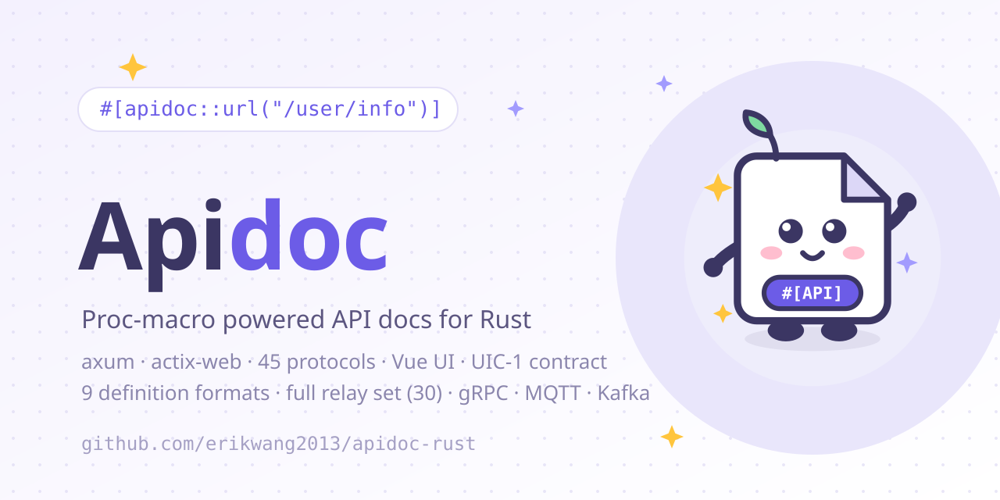

本页目录
Rust 版用过程宏在 handler 上声明文档，文档片段在编译期静态注册，运行期零成本聚合。它兼容 axum 与 actix-web，内置 Web UI、在线调试、Mock、鉴权、多应用版本、导出、分享与代码生成。适合希望文档严格跟随代码、并在编译期发现错误的 Rust 服务。

适用场景
- axum 或 actix-web 服务；后续版本通过薄适配器扩展其他框架。
- 希望文档在编译期生成，接口与文档不会失同步。
- 需要在线调试、Mock、HMAC 鉴权、多应用/版本、Markdown/TypeScript/Swagger 导出。
- 项目使用 Rust 1.82+，接受过程宏 +
linkme的注册方式。
安装与依赖
[dependencies]
apidoc-rust = "2.0"
serde_json = "1"
linkme = "0.3"
要求 Rust 1.82+。单个发布包是 apidoc-rust，库名是 apidoc；apidoc-macros 由 apidoc re-export，不需要单独依赖。默认构建不拉 Web 框架依赖，按框架开启 feature：
features = ["axum"]：axum 适配器，Mock 隐含启用。features = ["actix"]：actix-web 适配器，功能与 axum 1:1。features = ["mock"]：只开 Mock 引擎，不挂框架。
linkme 必须直接依赖，因为宏生成的注册代码会引用它。只注册文档、不直接使用其他 API 的 crate 还必须被链接，而不是只编译；调用任意 crate 导出项或注册 handler 可以强制链接。
核心模型与收集
| 类型 | 作用 |
|---|---|
DocRegistry |
收集所有宏片段，合并为端点，解析 ref / table。 |
ApidocConfig |
项目级配置：标题、描述、鉴权、应用树、版本、表、缓存、代码模板。 |
DocEndpoint |
一个接口：title、desc、url、method、headers、params、querys、returned、group、tags 等。 |
DocParam |
参数：name、type、required、default、desc、mock、children。 |
AppConfig |
应用/版本节点：key、title、items、password。 |
TableDef / TableField |
数据表字段引用，供 #[apidoc::table] 使用。 |
CacheConfig |
Mock 输出的进程内缓存，ttl 秒，0 表示永久。 |
生成完整文档：
use apidoc::{ApidocConfig, DocRegistry};
fn main() {
let doc = DocRegistry::collect_doc(ApidocConfig {
title: "My API".to_string(),
description: Some("Internal API".to_string()),
..Default::default()
});
println!("{}", serde_json::to_string_pretty(&doc).unwrap());
}
DocRegistry::collect() 只返回端点列表；collect_doc() 额外构建应用/版本树。未使用 app 或未配置 apps 时，输出与旧版本保持一致。
编写注解
在 handler 函数上逐条挂属性宏：
use apidoc::*;
#[apidoc::title("获取用户信息")]
#[apidoc::desc("根据用户 ID 查询用户详情")]
#[apidoc::url("/api/user/info")]
#[apidoc::method("GET")]
#[apidoc::param(name = "user_id", ty = "int", required, desc = "用户ID", mock = "1")]
#[apidoc::query(name = "lang", ty = "string", desc = "语言", default = "zh-CN")]
#[apidoc::returned(
name = "data",
ty = "object",
desc = "用户数据",
children = [
{ name = "id", ty = "int", required, desc = "用户ID" },
{ name = "name", ty = "string", required, desc = "用户名", mock = "erik" },
]
)]
fn get_user_info() -> String {
unimplemented!()
}
注解一览
| 宏 | 参数 / 说明 |
|---|---|
title / desc |
接口标题与描述。 |
method |
HTTP 方法，编译期校验白名单。 |
url |
接口 URL，必须以 / 开头。 |
param / query / returned |
Body、Query、响应字段；参数见下表。 |
header |
name、desc，name 不能为空。 |
route_param |
路由参数，参数同 param。 |
tag |
标签，可重复挂载，追加。 |
group |
分组，UI 优先使用。 |
author |
作者。 |
response_status |
状态码，可写多个，自动去重。 |
success / error |
code、example 示例响应。 |
not_debug |
标志位，调试面板可过滤。 |
md |
Markdown 补充说明，原样展示。 |
sort |
组内排序权重，支持负数。 |
r#ref |
引用其他接口的返回结构，按函数名全局匹配。 |
app |
挂到 ApidocConfig.apps 中的某个 key。 |
table |
引用 ApidocConfig.tables 中的表 key，字段平铺进 returned。 |
param、query、returned 的字段参数：
| 参数 | 说明 |
|---|---|
name |
字段名，必填。 |
ty |
类型，如 string、int、object、array。 |
required |
是否必填，是标志位，不写值。 |
default |
默认值。 |
desc |
字段说明。 |
mock |
Mock 值或 fake:xxx 规则。 |
children |
嵌套子字段，用 { ... } 数组书写。 |
编译期规则
url必须以/开头；method必须是GET、POST、PUT、DELETE、PATCH、HEAD、OPTIONS之一。header必须有非空name；group、author、ref、app、table不能为空。not_debug不接受参数；sort只接受整数。- 参数名是必填的；嵌套
children会递归解析。 - 错误会带精确的 span 在编译期报出，不会等到运行时才失败。
收集、输出与引用
let doc = DocRegistry::collect_doc(ApidocConfig {
title: "My API".to_string(),
apps: vec![AppConfig {
key: "demo".to_string(),
title: "Demo".to_string(),
items: vec![],
password: None,
}],
..Default::default()
});
ref 引用目标接口的 returned，例如：
#[apidoc::r#ref("get_user_list")]
fn get_user_detail() -> String { unimplemented!() }
ref 是 Rust 关键字，属性路径必须写 raw identifier：#[apidoc::r#ref(...)]。目标是函数名，全局匹配；引用方自己的 returned 会被目标整体覆盖；collect 时会在 stderr 输出警告。table 与 ref 可以同时使用，表字段会在引用解析后追加。
axum 接入
[dependencies]
apidoc-rust = { version = "2.0", features = ["axum"] }
use apidoc::axum::{apidoc_routes, cors_layer, CorsConfig};
use apidoc::ApidocConfig;
use axum::{routing::get, Router};
let app = Router::new()
.route("/users", get(list_users))
.merge(apidoc_routes(ApidocConfig {
title: "My API".to_string(),
..Default::default()
}))
.layer(cors_layer(CorsConfig {
allow_origins: vec!["https://admin.example.com".to_string()],
}));
挂载后：
| 路径 | 作用 |
|---|---|
/apidoc |
文档 UI。 |
/apidoc/api.json |
文档数据。 |
/apidoc/mock |
Mock 响应。 |
/apidoc/export |
导出：Markdown / TypeScript / Swagger。 |
/apidoc/share |
分享链接。 |
/apidoc/generate?template=api.ts |
代码生成。 |
/apidoc/auth |
登录换取 token。 |
/apidoc/pet.svg |
项目宠物图标。 |
cors_layer 应在最终 Router 上调用，确保业务路由也能被浏览器跨域直连。CorsConfig { allow_origins: vec![] } 或 ["*"] 放行字面 *，不携带凭据；配置白名单时精确匹配 Origin。
actix-web 接入
[dependencies]
apidoc-rust = { version = "2.0", features = ["actix"] }
use actix_web::{App, HttpServer};
use apidoc::actix::{apidoc_routes, cors_layer, CorsConfig};
use apidoc::ApidocConfig;
#[actix_web::main]
async fn main() -> std::io::Result<()> {
HttpServer::new(|| {
App::new()
.service(apidoc_routes(ApidocConfig {
title: "My API".to_string(),
..Default::default()
}))
.wrap(cors_layer(CorsConfig::default()))
})
.bind("127.0.0.1:8080")?
.run()
.await
}
actix 适配器与 axum 功能 1:1，路由、Mock、导出、鉴权行为一致。
Mock 与在线调试
Mock 规则有三种优先级：
#[apidoc::param(name = "email", ty = "string", desc = "邮箱", mock = "fake:email")]
#[apidoc::param(name = "status", ty = "string", desc = "状态", mock = "1")]
#[apidoc::param(name = "name", ty = "string", desc = "用户名")]
fn create_user() -> String { unimplemented!() }
fake:xxx走 15 条 fake 规则：name、company、email、phone、url、ip、city、country、text、number、int、float、bool、uuid、date。- 非空
mock原样直出，例如"1"。 - 无
mock时按ty生成：int →"1"、float →"0.5"、bool →"true"、object →"{}"、string →"string"；array 固定 2 项。 children递归嵌套；not_debug接口默认从调试面板隐藏，可勾选显示。
在线调试由浏览器直连目标接口，需要适配器的 cors_layer 放行跨域。v2 调试面板支持前置/后置脚本：
// 前置：请求前执行，可改 ctx.url / method / headers / body
ctx.headers['X-Token'] = localStorage.getItem('token') || '';
// 后置：响应后执行，ctx = { status, ms, text, url, method, ep }
return 'HTTP ' + ctx.status + ' · ' + ctx.ms + 'ms\n' + ctx.text;
脚本报错只在结果区提示，不中断请求。
鉴权
use apidoc::auth::AuthConfig;
let config = ApidocConfig {
title: "My API".to_string(),
auth: Some(AuthConfig {
enable: true,
password: "your-password".to_string(),
secret_key: "your-secret-key".to_string(),
expire: 86400,
}),
..Default::default()
};
流程：
- 客户端
POST /apidoc/auth，JSON body{"password":"...","appKey":"<key>"}换取{"token":"..."}；密码错误 401，body 非法 400。 - 数据路由
/apidoc/api.json、/apidoc/export、/apidoc/mock需要?token=xxx，选择应用时同时带&appKey=。 - token 是
base64url(payload).base64url(HMAC-SHA256(payload))，载荷包含过期时间；改密码会作废旧 token。 password/secret_key永不序列化；应用密码优先于全局密码；空密码失败关闭。- 连续登录失败按指数退避拒绝；带凭据/token 的响应统一
Cache-Control: no-store。
secret_key 缺省时使用进程内随机密钥，进程重启后旧 token 失效；多实例部署必须显式配置一致的 secret_key。
多应用与多版本
#[apidoc::app("demo")]
#[apidoc::title("获取用户信息")]
fn get_user_info() -> String { unimplemented!() }
let apps = vec![AppConfig {
key: "demo".to_string(),
title: "演示应用".to_string(),
items: vec![AppConfig {
key: "v1".to_string(),
title: "v1".to_string(),
items: vec![],
password: None,
}],
password: None,
}];
app引用了未配置的 key 时会在 stderr 警告并落到默认应用。- UI 顶部出现应用/版本选择器，token 按 appKey 分开存储。
- 应用配置了
password时只校验应用 token；应用密码优先于全局密码。
数据表引用与文档缓存
ApidocConfig {
tables: vec![TableDef {
key: "user".into(),
title: "用户表".into(),
fields: vec![
TableField { name: "id".into(), ty: "int".into(), required: true, desc: Some("用户ID".into()), ..Default::default() },
TableField { name: "name".into(), ty: "string".into(), mock: Some("erik".into()), ..Default::default() },
],
}],
cache: Some(CacheConfig { enable: true, ttl: 60 }),
..Default::default()
}
#[apidoc::table("user")] 会把表字段平铺追加到 returned；未配置的 key 只警告不报错。cache.ttl 控制 /apidoc/mock 的进程内缓存，0 表示永久；api.json / 导出在构建路由时已物化，不走该缓存。
分享、导出与代码生成
GET /apidoc/share?app=api&url=/api/user/info&method=GET&base=https://example.com
GET /apidoc/export?format=md
GET /apidoc/export?format=ts
GET /apidoc/export?format=swagger
GET /apidoc/generate?template=api.ts
share返回深链；鉴权开启时附带 token，打开免密。export支持 Markdown、TypeScript、Swagger/OpenAPI 3.0.0；未知 format 返回 400。generate内置api.ts、handler.rs、schema.sql，同名自定义模板可以覆盖。模板支持{{变量}}与{{#each ...}}，变量包括 endpoints、tables、字段与 SQL 片段变量。
典型场景
REST CRUD
为每个 handler 挂 title、url、method、参数与返回；用 group / tag 归类。编译期校验能在提交前发现 URL、method 和参数名错误。
分页与通用字段
用 ref 复用列表接口的 returned，或把分页参数抽成公共定义；table 适合把配置好的表字段平铺进响应。
登录与鉴权
开启 AuthConfig 后，UI 自动显示密码遮罩；应用级密码适合把不同团队的应用拆开。多实例要配置固定的 secret_key。
多版本
用 AppConfig.items 建树，用 #[apidoc::app("key")] 挂接口；UI 按应用/版本切换。
前端类型与后端骨架
export?format=ts 直接给前端类型；generate?template=handler.rs / schema.sql 生成后端骨架和建表 SQL。
数据表驱动
Rust 侧不连数据库：在 ApidocConfig.tables 里配置表和字段，再用 table 注解引用，文档与配置保持一致。
规则与排错
| 问题 | 检查 |
|---|---|
编译报错 apidoc::url |
URL 是否以 / 开头；method 是否在白名单内。 |
编译报错 linkme 相关 |
是否直接依赖 linkme；只注册文档的 crate 是否被链接。 |
| 接口不出现 | 宏是否挂在 handler 函数上；crate 是否被链接；是否调用了 collect_doc。 |
ref 不生效 |
是否写成 #[apidoc::r#ref("fn_name")]；目标函数名是否正确。 |
app 落默认应用 |
ApidocConfig.apps 是否有对应 key。 |
| 鉴权 token 重启失效 | 显式配置固定 secret_key。 |
| 调试跨域失败 | 是否挂 cors_layer；allow_origins 是否包含页面来源。 |
| 页面旧数据 | 文档产物在路由构建时物化；重启服务或重新构建。 |
参考
- apidoc-rust README
- apidoc-rust Releases
- crates.io apidoc-rust
- 架构、功能、生命周期图见本页顶部与 README
docs/images/。
安装
apidoc-rust = "2.0"其他语言指南
需要帮助？
到 GitHub Issues 提问，或先看仓库 README。